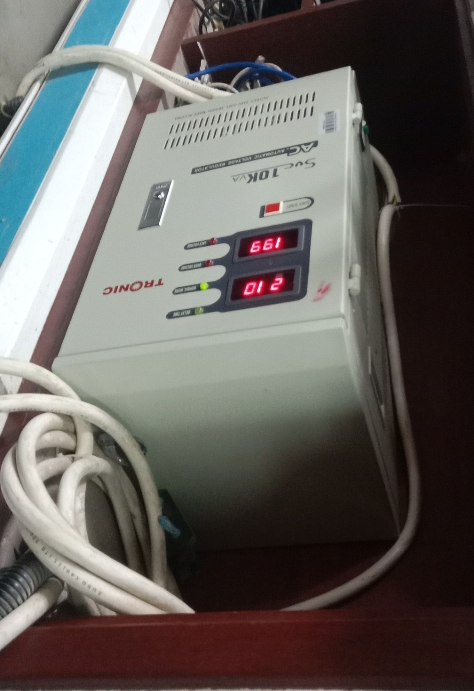

I'm a student with a passion for learning and growth. I enjoy exploring new ideas and
connecting with others.
What I really want to do is to become a full-time big data analyst and a data scientist.
I have a strong
interest in data analysisi and data science, and I am eager to develop my skills in these areas.
I am committed to continous learning and growth, and I am excited about the opportumities
that lie ahead in my journey to becoming a big data analyst and data scientist.
I usually spend my free time watching youtube videos about artificial intelligence, fintech, and data science. During the weekends, I also like to read books and articles about these topics.
| Education Level | School/Institution | Field of Study | Year |
|---|---|---|---|
| Undergraduate | University of Dar es Salaam | Computer Science | 2025 - Present |
| Advanced Secondary School | Milhan Boys' High School | PCM Combination | 2023 - 2025 |
| Secondary Education | Kiturimo Boys' Secondary School | All Major Subjects | 2019 - 2022 |
| Primary Education | Nyabishenge S/M | All Major Subjects | 2012 - 2018 |


Here are some of my favorite links that I find useful and interesting: